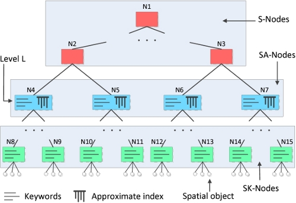
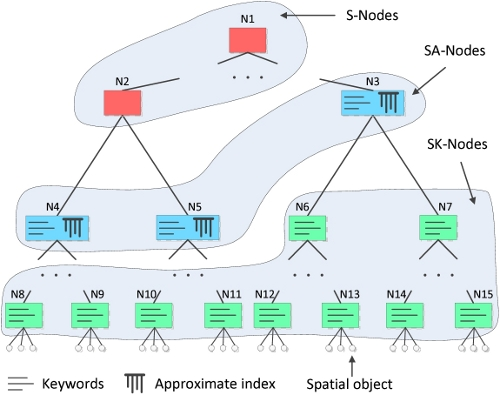

AppString > AppStringDoc
LBAK-Tree
Introduction
This module provides location-based approximate keyword search.
For example, it can answer queries such as find Alkatras near San Fransisco. Notice that Alkatras is misspelled but the LBAK-Tree can still find useful answers. In short, the LBAK-Tree answers queries with a spatial component and a keyword component, where the keywords don't need to match exactly but approximately.
Overview
The LBAK-Tree is based on a hierarchical spatial index that is enhanced with inverted indexes for approximate string lookups. In our implementation we use an R*-Tree as spatial index and use the FilterTreeDoc module (part of Flamingo) to implement the inverted indexes for approximate string lookups.
Our paper Supporting Location-Based Approximate-Keyword Queries describes three variants of the LBAK-Tree which differ in where they place inverted indexes in the spatial index. This module contains all their implementations:
Fixed-Level (FL)
- Inverted indexes are placed at one level in the R*-Tree

Variable-Level (VL)
- Inverted indexes can be placed at different levels in the R*-Tree

Variable-Level Exploiting Keyword Frequencies (VLF)
- Inverted indexes are placed at various levels,
- Keyword-frequencies are exploited to improve performance

Please have a look at example.cc in the lbaktree/src folder to get started!
Contributors
- Sattam Alsubaiee (design, main author)
- Shengyue Ji (R*-Tree implementation)
- Alexander Behm (author)
- Chen Li (project leader)
References
- Sattam Alsubaiee, Alexander Behm, Chen Li: Supporting Location-Based Approximate-Keyword Queries, ACM SIGSPATIAL GIS 2010